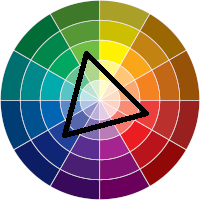

Agora, podemos ver três cores sendo utilizadas. Essa são Cores Tríade.
Para encontrar a Tríade, usa-se um triângulo equilatero dentro do círculo cromático. As cores em suas extremidades formam essa técnica, sendo elas contrastes entre si.
